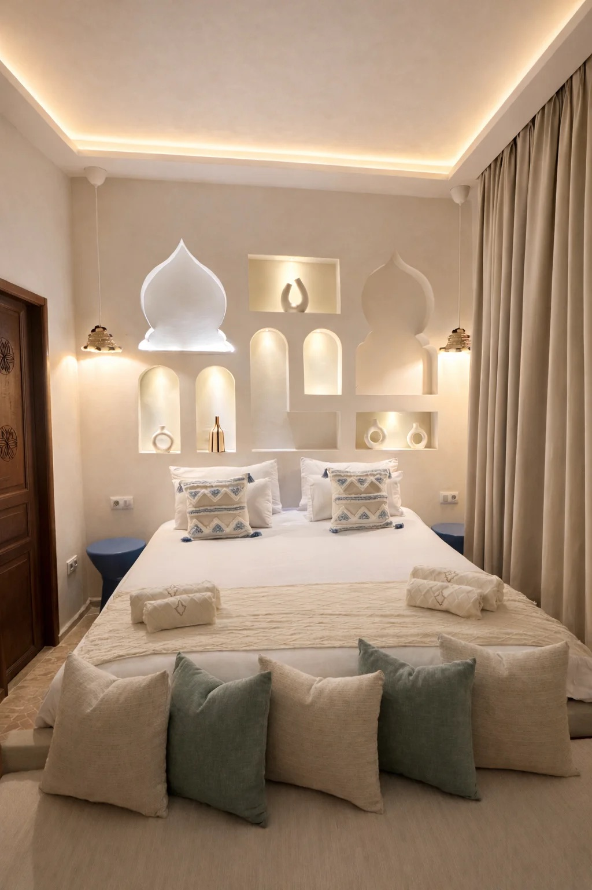
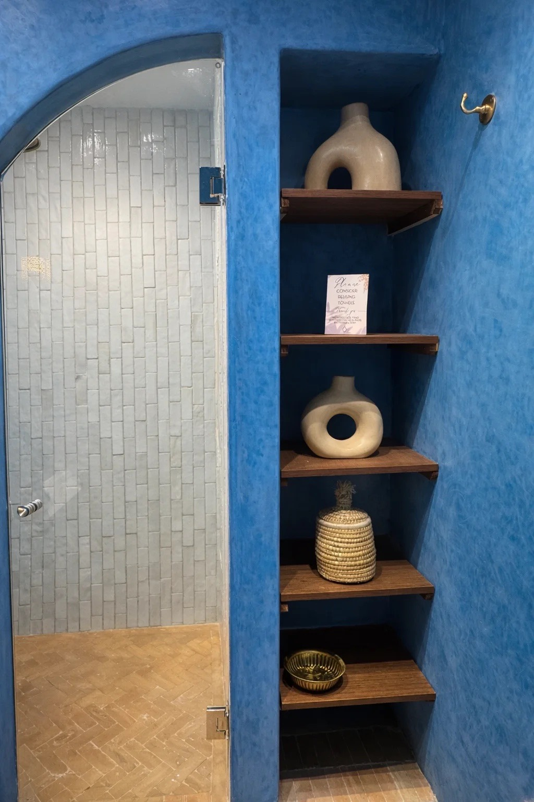

Chambre
Chefchaouen
La sérénité de la ville bleue
- Voyageurs
- 3
- Lits
- 2
- Salle de bain
- 1
- La ville
- 35,17° N · 5,27° O
Murs aux nuances de bleu, lanternes artisanales et matières naturelles : les ruelles silencieuses du Rif, dans une chambre qui invite à ralentir.